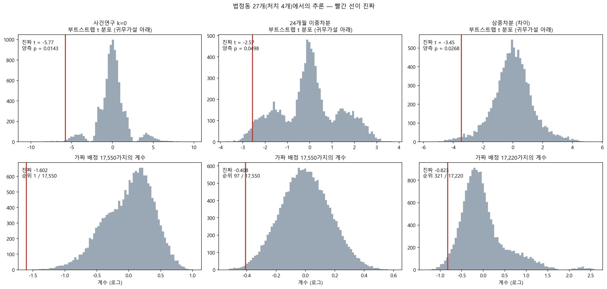

중간 발표 · 주 결과와 강건성
거래는 확실히 끊었다
가격은 그렇게 말할 수 없다
서울 아파트 실거래 47만 건과 정책 공고 원문으로 토지거래허가제의 인과효과를 추정한다.
서울 아파트 실거래 47만 건과 정책 공고 원문으로 토지거래허가제의 인과효과를 추정한다.
전국에 같은 날 시행되면 "규제가 없었다면 어땠을까"를 채울 집단이 남지 않는다. 토허제는 드물게 그 조건을 갖췄다.
| 조건 | 토허제 |
|---|---|
| 처치가 지역을 갈라 들어간다 | 법정동 단위로 지정한다. 같은 구 안에서 갈린다 |
| 처치 시점이 하루로 정해진다 | 공고일과 효력발생일이 공고 원문에 적혀 있다 |
| 켜졌다 꺼진다 | 2020 지정 → 2025.2 해제 → 2025.3 재지정 |
| 자료가 거래 단위로 공개된다 | 국토교통부 실거래가. 계약일·단지·면적·층 |
가로축은 지정 시점 기준 분기다. 사전 구간이 0 근처에 있고 효력일 직후 한 분기에 떨어진다.

처치가 4개 동뿐이다. 관행 표준오차는 묶음이 많다는 가정에 기대므로 p 를 너무 작게 잡는다. 실제로 10⁻⁸ 이 나왔다.
| 방법 | 결과 |
|---|---|
| 관행 p | 8×10⁻⁹ |
| 와일드 클러스터 부트스트랩 9,999벌 | 0.014 |
| 무작위화 — 4개 동을 고르는 모든 경우 | 1위 / 17,550 |
어느 4개 동을 처치로 골라도 진짜 처치동만큼 줄어든 조합이 없다.

처치군·통제군·창·날짜 세는 법·빈칸 처리·척도를 전부 조합했다. 위 칸이 효과, 아래 칸이 각 사양에 들어간 선택이다.

이중차분은 "규제가 없었다면 두 집단이 평행했을 것"에 기댄다. 그 가정을 믿는 대신 위배의 크기를 모수로 놓고 키워 본다.
M = 1 은 "사전에 가장 크게 흔들렸던 만큼이 사후에도 매 분기 그대로 이어졌다"는 뜻이다.

| 검정 | 거래량 | 가격 |
|---|---|---|
| 점추정 (지정 직후 / 12개월 평균) | −71 ~ −80% | −4 ~ −7% |
| 설계 조합 중 음수인 비율 | 100% | 79.9% |
| 설계 조합 중 유의하게 음수인 비율 | 100% | 48.6% |
| 사전 추세 붕괴값 | 1.62 | 0.22 |
| 합성대조군 경험적 p | 0.007 | 0.511 |
거래 동결은 부수 효과가 아니라 비용이다. 거래가 80% 끊기면 이사가 필요한 사람도 옮기지 못하고, 시장이 값을 찾는 신호도 약해진다.
같은 동, 같은 시기, 같은 규제인데 어떤 단지는 거래가 거의 줄지 않았다.
| 2020-06-23 지정 | 거래량 효과 |
|---|---|
| 전용면적 40㎡ 이상 | −95.0% |
| 전용면적 40㎡ 미만 | +125.7% |
줄지 않은 정도가 아니라 늘었다.